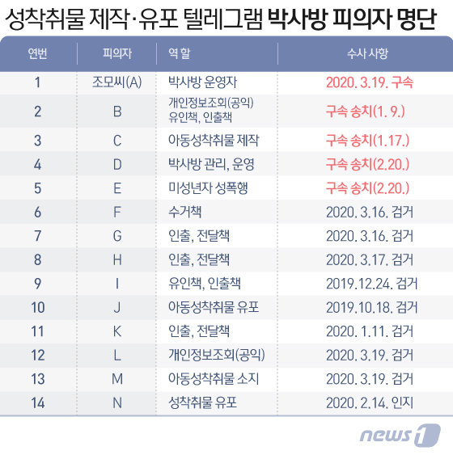
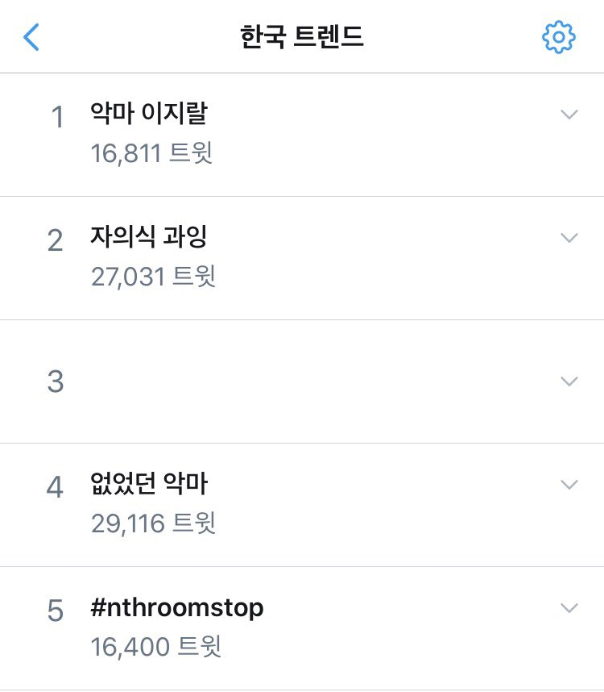
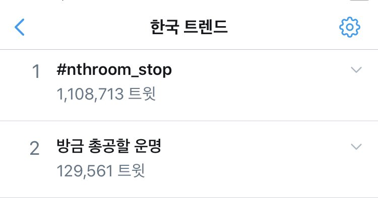

2018년부터 2020년 현재(3월 23일 기준)까지 텔레그램에서 발생해온 디지털성범죄이다.
3대 운영자 와치맨은 '(감)시자님'으로 불리며 갓갓의 홍보 매니저 역할을 하다가 운영자가 되었으며, 따로 블로그를 개설해 n번방에서 공유되는 불법 성착취물을 홍보하는 식으로 회원을 끌어들이는 데 일조하면서 영향력을 키워왔다.3
박사방 운영자 조주빈은 성착취 영상을 제작해 돈을 받고 유포하는 ‘박사방’을 운영했다. 조주빈은 누구나 열람가능한 ‘맛보기’ 대화방을 통해 박사방의 존재를 알린 뒤, 유료로 입장해야 하는 1~3단계 대화방을 별도로 운영했다. 단계가 올라갈수록 영상 수위도 세고 입장료(20만~150만원)도 높아지는 식이었다. 해당 유료회원 방에선 미성년자를 포함해 여성 74명을 협박해 찍은 성 착취 영상이 공유됐다. 박사방은 입소문을 타면서 유료회원이 1만명 수준으로 불어난 것으로 추정된다.5
미성년자를 포함해서 74명의 여성에게 스폰서 알바를 시켜준다고 미끼를 던지고는, ‘알바를 하기 위해서 나체 사진을 보내야 한다’는 식으로 사진을 받은 뒤 그걸 미끼로 협박해 성 착취물을 촬영하게 하고 그걸 남성 회원들에게 공유했다.6
텔레그램 외에 디스코드, 트위터, 텀블러 등 익명 활동이 가능한 여러 해외 채팅 플랫폼에서 해당 성착취물의 공유 및 판매가 이루어지고 있다.

미성년자로 추정된다. 아직 구속되지 않았다.
“켈리(신 모씨/32세/‘갓갓’의 ‘n번방’ 계승)”
3월 23일 3대 운영자 '와치맨'이 경찰에 이미 검거된 것이 확인됐다. 피의자는 지난해 말 경기남부지방경찰청에서 검거돼 구속됐다.9
“와치맨(전 모씨/38세/‘고담방’ 운영+’n번방’ 대중화 설계)
경찰이 3월 24일 '신상정보 공개 심의위원회'를 열어 신상을 공개할지 결정할 계획이었으나, 2020년 3월 23일 SBS 8시 뉴스에서 박사방 운영자의 신상을 단독 보도했다. SBS에 따르면 ‘박사방’ 운영자 조주빈은 1995년생으로 인하공업전문대학 정보통신과를 2018년에 졸업하였으며 현재 무직이다.
졸업 직후 2018년부터 조주빈은 범행을 시작하였으며, 2019년 9월 시초였던 N번방 운영자 ‘갓갓’이 시들해지자 ‘박사방’을 만들어 성 착취 범행을 저지르기 시작하였다.10
‘로리대장태범(배 모씨/19세/‘제2 n번방’ 운영자)’ 및 일당(나머지 10대~20대 남성/‘제2 n번방’ 운영진)
박사방 운영자 26세 남성 조주빈은 포토라인에서 “멈출 수 없었던 악마의 삶을 멈춰줘 감사”하다고 발언했다. 해당 발언을 통해 범죄자를 ‘악마’와 같이 캐릭터로 소비하는 기사들이 쏟아지자 비판이 이어졌다.
|  |
2020년 3월 25일 12시경 한국 트위터 실시간 트렌드에 ‘조주빈 얼굴’, ‘악마의 삶 이OO’ 등이 올랐다. |
해당 실시간 트렌드를 통해 “언론에서 범죄자새끼들한테 악마라는 타이틀 달아주는 것 좀 안 했으면. ... 조두순 사건 때도 악마가 돌아온다고 언급하고. 그 새끼들은 쓰레기만도 못한 범죄자 새끼들인데 왜 악마로 신분상승 시켜주냐?”와 같은 의견이 공유되었다.
성범죄피해자지원활동가 마녀는 다음과 같은 의견을 남겼다.
언론 등에서 계획적이고 조직적인 성착취•성폭력 범죄(살인 모의 포함)를 저지른 쓰레기를 <악마>로 만드니, 그 쓰레기가 자신을 <악마>로 지칭하며 자신의 범죄를 스스로 멈출 수 없었던 것으로 표현한 것이다. 언론이 성범죄 가해자를 캐릭터로 만들어 팔아댄 것이다. 언론의 책임이 크다. “조주빈”은 수사망이 좁혀 오자 돈 세탁을 하며 앞날을 대비해 왔고, 그런 새끼를 <악마/절대자>로 만들고 그 새끼의 행동이 조절 불가능한 그 무엇으로 표현한 언론에게 많은 비판이 가해져야 한다.
지뇽뇽은 다음과 같은 의견을 남겼다.
박사방의 운영자 26세 남성 조주빈은 ‘평소 주류 남성 세계에 끼고 싶었는데 그게 좌절되니까 범죄를 통해서라도 + 별 볼 일 없는 남성들 사이에서라도 박사님 소리 들어가면서 인정욕구와 관종력을 충족시키려 했음이 드러난다’. 어떤 남성들에게 성범죄는 서로 트로피를 나누면서 남성 집단의 과시와 결속을 돕는 일종의 '스포츠'인 것이다.11 스스로를 '악마'라고 칭하는 것 역시 과한 자의식, 어떤 영향력을 갖고 싶다는 관심, 권력에의 열망과 여기에 부합하지 않는 초라한 현실의 반증이기도 하다. ... 이런 ‘관종형’(명성 추구형) 범죄자들은 자신의 메시지와 사진이 미디어에 실리는 걸 좋아한다. 이를테면 나중에 자신을 소재로 한 영화가 나올거라는 상상을 하며 즐거워하는 것이다. 이들이 원하는 대로 미디어가 움직이면 안 된다.12
이와 관련하여 ‘조커’와 같이 범죄자에 대한 미화로 작동하는 미디어에 대한 우려의 목소리도 있었다. 실제로 조주빈의 이전 닉네임 중 하나는 ‘조커’였다고 한다.
‘텔레그램 N번방 사건’을 가장 먼저 취재하고 기사화하였다. 대학생 2명으로 구성된 취재팀으로, 2019년 7월 텔레그램 N번방 취재를 시작하여 뉴스통신진흥회 ‘탐사‧심층‧르포취재물 공모 시상식’에 출품해 최고상을 받았다. 같은 해 9월2일 성희롱 대화, 불법 촬영물 공유, 미성년자 사진 합성, 소위 ‘지인 능욕’이라 불리는 사진 합성, 이를 악용한 협박 등 텔레그램 N번방을 포함한 디지털 성범죄 실태를 고발한 기사를 공개하였다. ‘취재단 불꽃’은 다양한 언론사에 취재자료를 공유했으며, 사건의 핵심인물 검거에 큰 역할을 했다.13
2019년 12월부터 텔레그램 N번방을 신고하는 개인들의 자발적인 모임으로 시작된 프로젝트팀이다. 텔레그램 내 디지털 성폭력 근절 법안을 새로 제정하라는 내용의 국회 청원 1호를 달성시키기도 하였다. 2020년 3월 21일부터 인스타그램에서 #N번방_챌린지 해시태그 운동 등으로 사건을 널리 알리기 위해 힘쓰고 있다.14
시위가 예정되어 있었으나, 코로나19로 인해 일정이 두 차례 연기되었으며 현재는 잠정 연기된 상태이다.
2020년 3월 19일 박사방 '박사'의 영장실질심사 이후 서울중앙지법 부근에서 기자회견을 가졌다.
대법원 양형위원회에 직접 제출될 디지털 성범죄 양형(처벌)기준 대국민 의견을 모집하고 있다. 참여 링크
N번방: 텔레그램 내 성착취 N번방 사건을 조명하는 3편의 다큐멘터리 시리즈를 제작하였다. 각각 다큐에서 프로젝트 ReSET팀과 화난 사람들을 인터뷰하였다.
(여성단체는 아니지만 카테고리 분류가 어려워 우선 여기에 넣습니다. 추후 수정 바랍니다.)
nthroomcrime.com은 N번방 사건의 수사 현황과 여론을 한눈에 파악할 수 있도록 숙명여대 학생이 기획/개발한 모니터링 사이트이다. 모든 데이터는 1분마다 업데이트 된다.
한국 트위터에서 해시태그 N번방 가해자들의 강력처벌 등을 요구하는 실시간 트렌드 총공이 이어지고 있다.
|  |
| 2020년 3월 23일 오후 11시경 트위터 실시간 트렌드 캡처. |
N번방 운영자 및 공범들의 강력처벌과 신상공개를 요구하는 청와대 국민청원이 다수 등록되었다.
연예인·유튜버 등 셀럽들이 해당 사건에 연대를 표명하며 관심을 촉구하는 게시글을 개인 sns 계정에 업로드하였다.